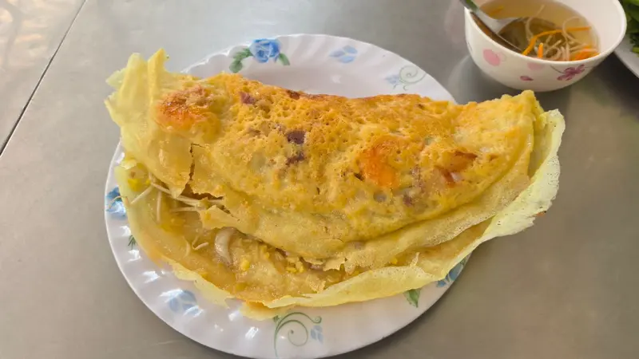
Phải thử
Bánh xèo cỡ lớn
Vỏ vàng giòn, nhân đậu xanh, giá, thịt heo, tôm. Đổ tươi theo từng đơn.
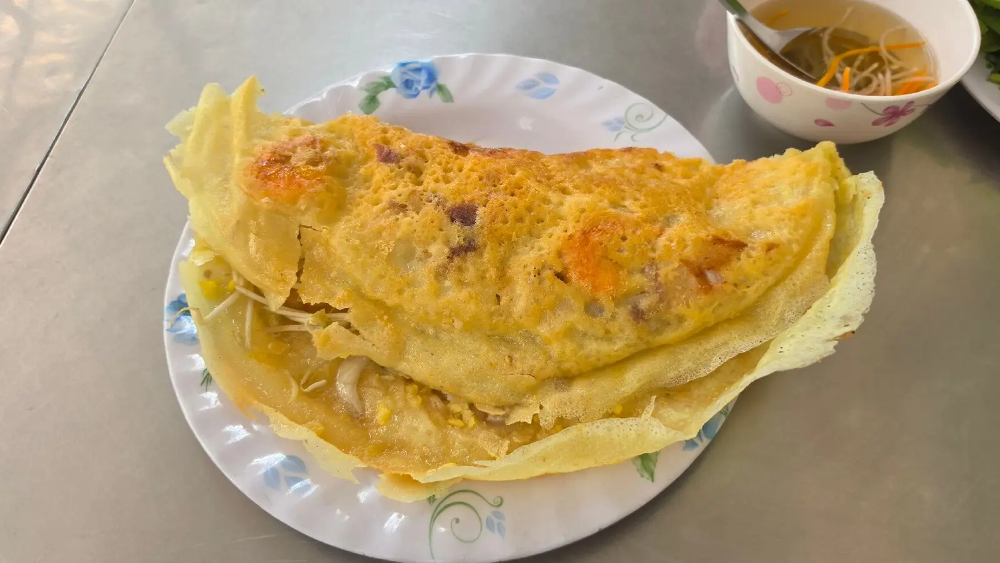
Chiếc bánh xèo khổng lồ vàng ươm, giòn rụm từ chảo lửa bên đường Đinh Công Tráng — nơi người Sài Gòn, du khách và cả Michelin Guide tìm về suốt hơn bảy thập kỷ.
Vỏ bánh mỏng giòn, nhân đậu xanh, giá, thịt heo và tôm — xé một miếng, cuốn cùng cải xanh và rau thơm, chấm nước mắm chua ngọt. Ngồi ngoài trời cạnh bếp mở để nghe trọn tiếng "xèo".
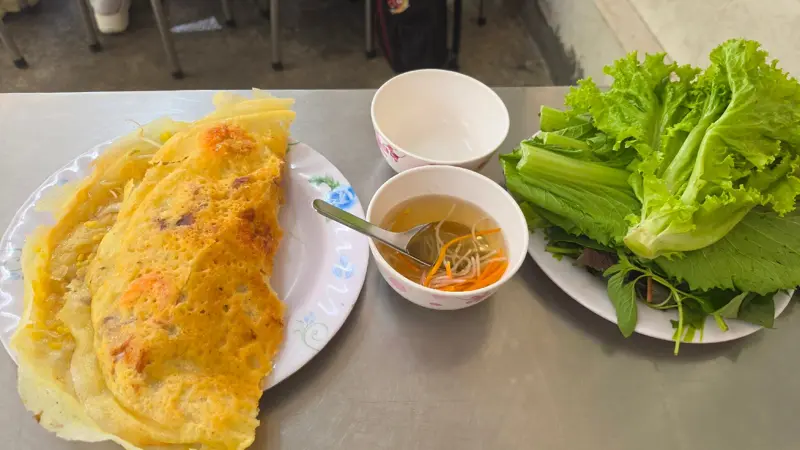
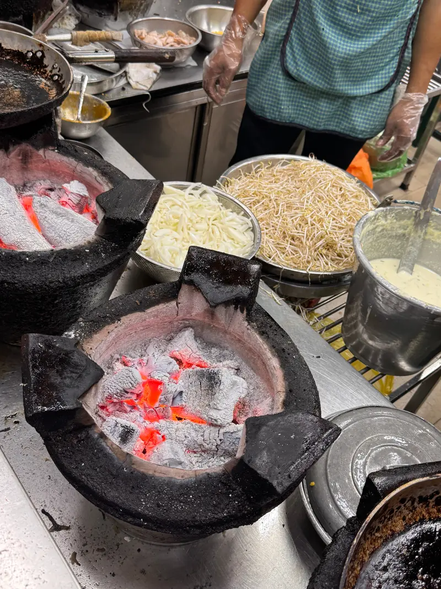
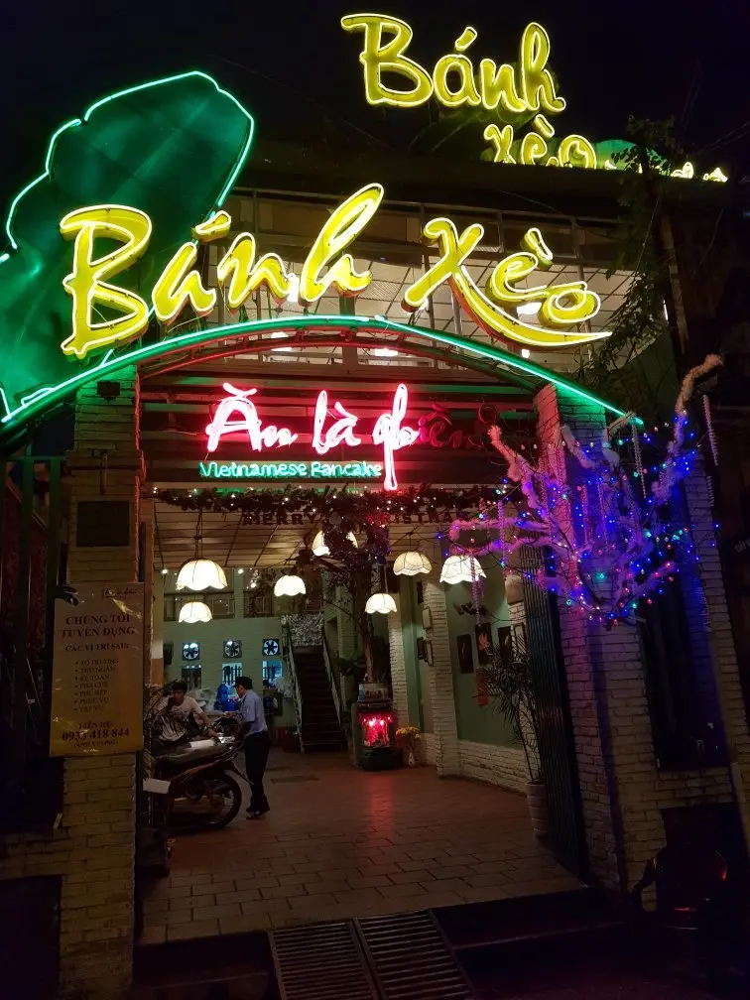
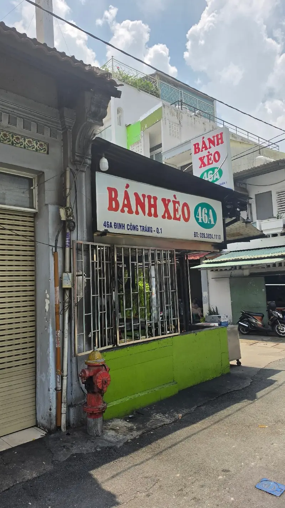
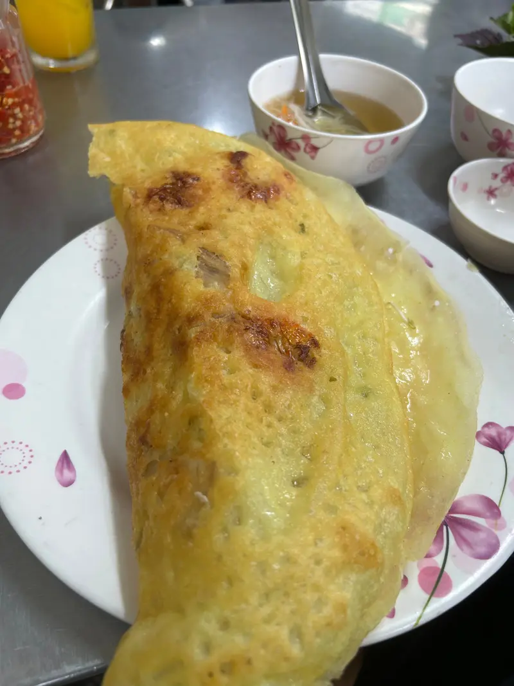
Quán bắt đầu từ năm 1945 với bà Lê Thị Giỏi và được truyền lại qua ba thế hệ. Mỗi chiếc bánh vẫn được đổ tươi khi khách gọi — không làm sẵn.
Nguồn: Michelin Guide, VnExpress, VnGuide.
"For over seven decades, regulars have been returning for its huge Vietnamese signature crêpes stuffed with mung beans, bean sprouts, pork and shrimp."— The MICHELIN Guide · Bib Gourmand
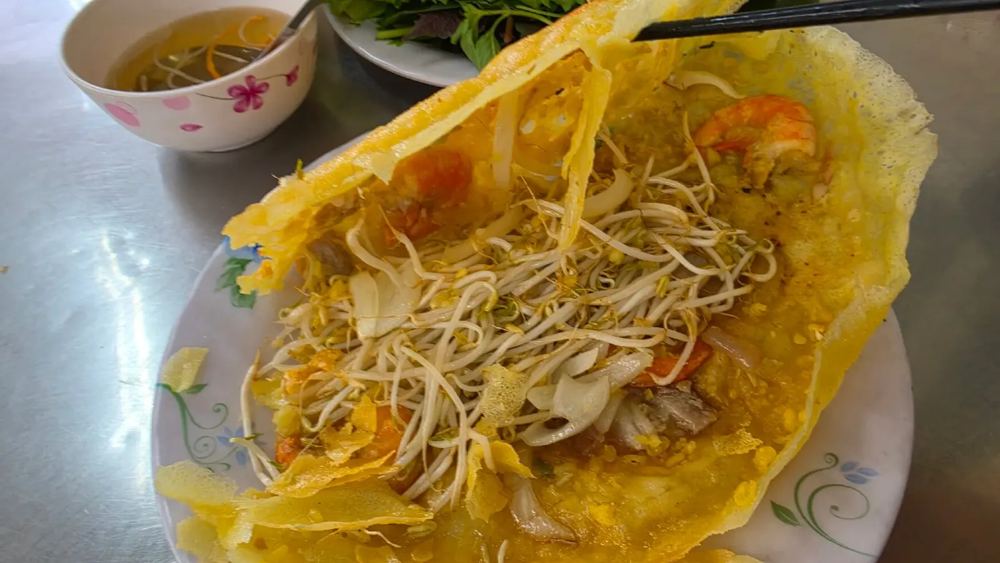
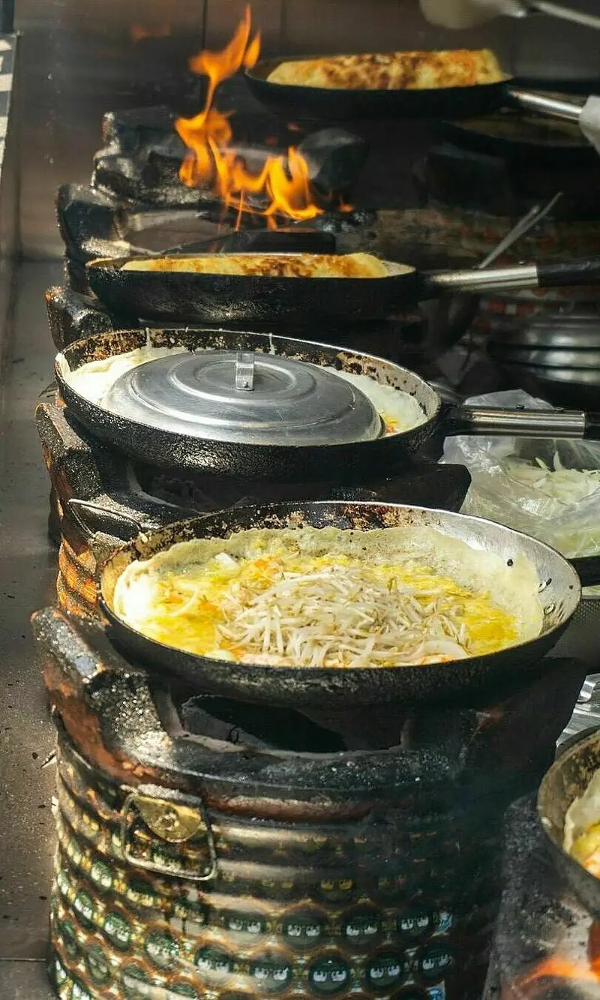
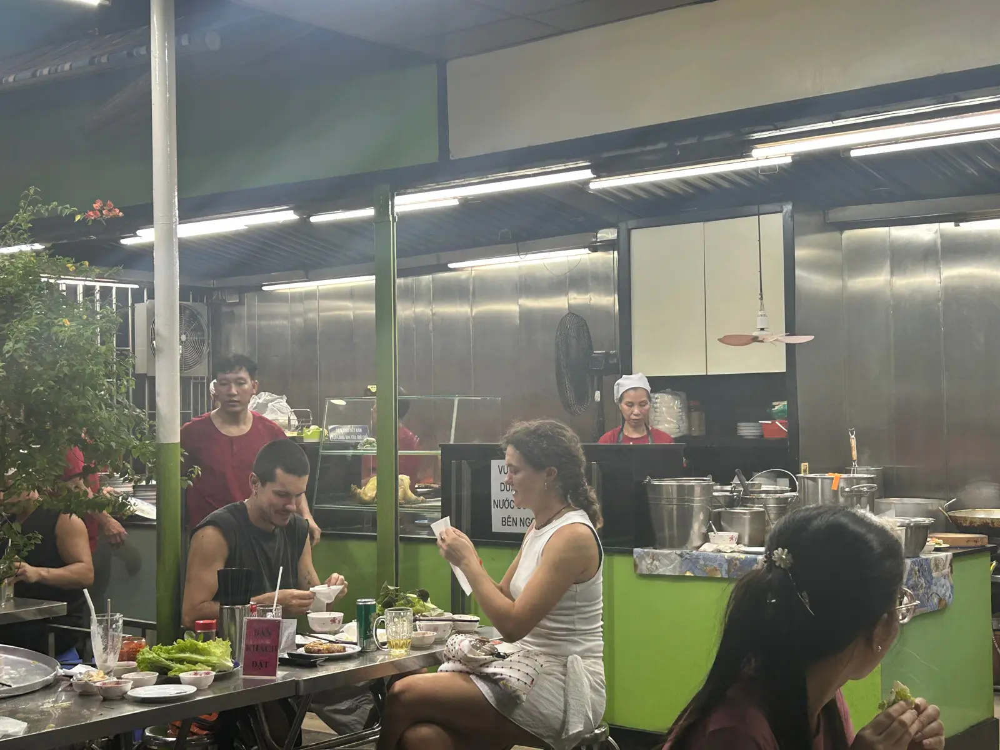
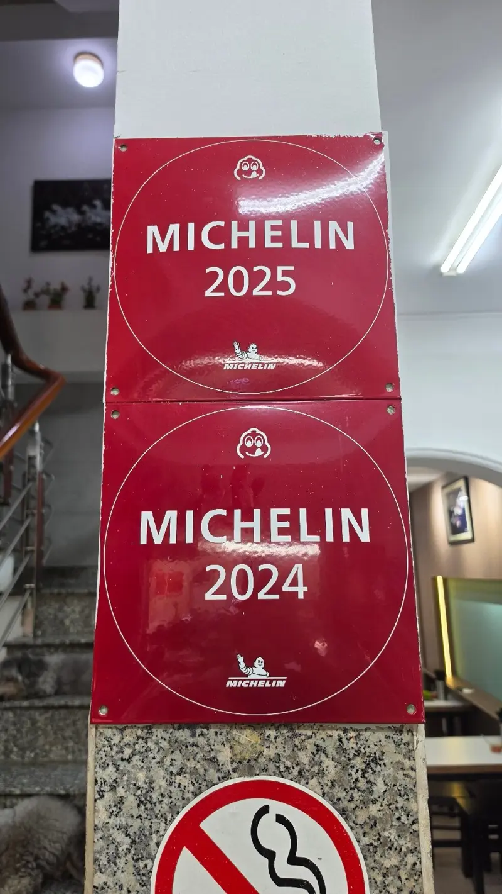
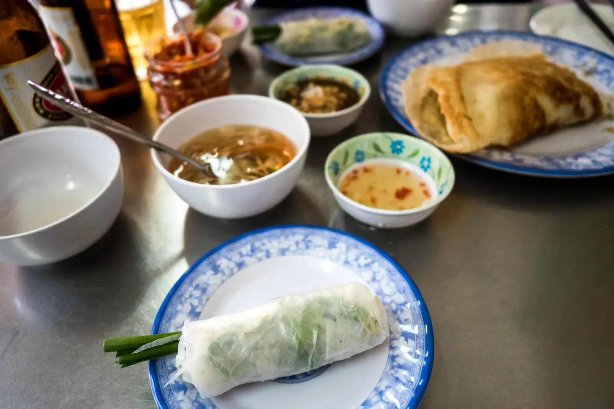
| Trưa | 10:00 – 13:50 |
| Tối | 16:00 – 20:50 |
| Địa chỉ | 46A Đinh Công Tráng, Tân Định |
| Điện thoại | 028 3824 1110 |
Mẹo: đến sớm trước giờ đóng cửa; đi nhóm buổi tối/cuối tuần nên gọi trước.
"Nếu muốn ăn bánh xèo kiểu miền Nam ở trung tâm Sài Gòn, đây là địa chỉ nhiều người nhắc tới đầu tiên."
— VnGuideTripadvisor
500+ đánh giá của du khách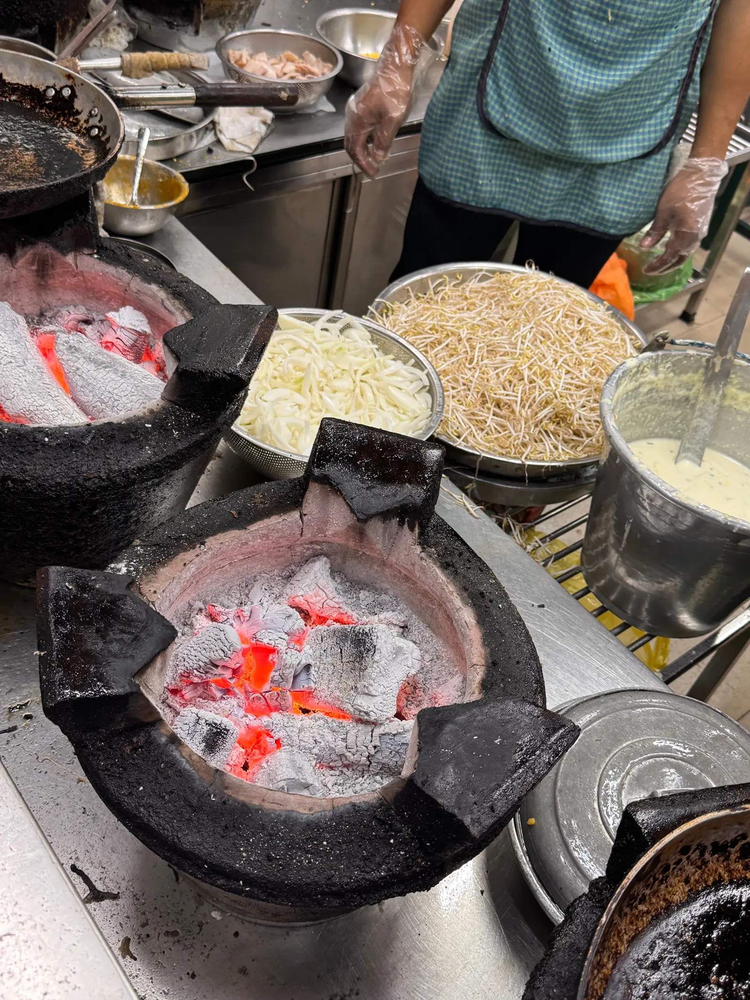
Gọi trước giữ bàn cho nhóm, hoặc nhắn quán qua Facebook.